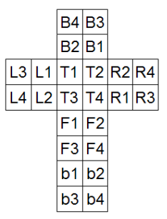

題目 : UVa Link
本題是要解一個二階魔術方塊 ( 2x2x2 )，題目會給定一個魔術方塊的狀態，要求出復原方塊的最少步驟是多少
輸入六個面，依序為 Top、Front、Right、Bottom、Back、Left
而復原狀態的方塊顏色依上面的順序為 White、Reg、Yellow、Blue、Orange、Green
並且每一面輸入字串的順序依照下圖 :

測資
Input :
2
GGGG
WWBB
OORR
YYYY
BBWW
RROOWRRG
WORO
BGBW
YYOG
BORY
GYWB
Output :
2
6
想法
參考Wiki，可以得知二街魔術方塊只有
$ \frac{ 8! 3^7 }{ 24 } = 7! 3^6 = 3674160 $
且最多 14 步r就可以還原魔術方塊，如下表
| 旋轉次數 | 狀態數量 |
|---|---|
| 0 | 1 |
| 1 | 6 |
| 2 | 27 |
| 3 | 120 |
| 4 | 534 |
| 5 | 2256 |
| 6 | 8969 |
| 7 | 33058 |
| 8 | 114149 |
| 9 | 360508 |
| 10 | 930588 |
| 11 | 1350852 |
| 12 | 782536 |
| 13 | 90280 |
| 14 | 276 |
再來就是對方塊的一些操作
( 注意旋轉時的方式是依照將該面面對自己的順時針方向與逆時針方向 )
| 代號 | 意思 | 說明 |
|---|---|---|
| F | Front face 正面 | 面向你的那一面順時針轉 90 度 |
| R | Right face 右面 | 右邊那一面順時針轉 90 度 |
| B | Back face 背面 | 背面順時針轉 90 度 |
| L | Left face 左面 | 左面順時針轉 90 度 |
| U | Up face 上面 | 上面順時針轉 90 度 |
| D | Down face 底面 | 下面順時針轉 90 度 |
若在代號後面加上 p 的話，代表那個一面 逆時針轉90度
例 : Lp 就是 Left face 逆時針轉 90 度
因此總共有 12 種旋轉面的方式
接下來還有轉動整個方塊的操作
| 代號 | 說明 |
|---|---|
| X | 整個方塊依照 Up 的方向轉動 90 度 |
| Y | 整個方塊依照 R 的方向轉動 90 度 |
| Z | 整個方塊依照 F 的方向轉動 90 度 |
同樣的若是在代號後面加上 p 的話，代表 旋轉相反方向
例 : Yp 就是將整個方塊依照 Rp 的方向轉動 90 度
總共有 6 種旋轉整個方塊的方式
但是為了方便辨識方塊，我們可以將方塊統一定點到一個固定的方位
例如，將復原的方塊依照上述的方向面對自己 ( Top 是 White、Front 是 Red、Right 是 Yellow )
可以發現 Front、Bottom 與 Right 的那個交界邊角，顏色依序為 Front = Red、Bottom = Blue 與 Right = Yellow
因此我們就令這塊邊角為基準點來轉動方塊的面的話，就只剩下 6 種面的操作
| 代號 | 意思 | 說明 |
|---|---|---|
| B | Back face 背面 | 背面順時針轉 90 度 |
| Bp | Back face 背面 | 背面逆時針轉 90 度 |
| L | Left face 左面 | 左面順時針轉 90 度 |
| Lp | Left face 左面 | 左面逆時針轉 90 度 |
| U | Up face 上面 | 上面順時針轉 90 度 |
| Up | Up face 上面 | 上面逆時針轉 90 度 |
另一個設立基準地的好處是，題目給的方塊不一樣會剛好就是我們所存的方向
因此我們只要利用轉動方塊的操作，就可以把方塊調整到與剛好契合基準點
解法一
我們可以把全部 3674160 種方塊的可能性利用 BFS 全部列舉出來
從還原狀態 step 0 ( 旋轉次數 0 ) 開始，對方塊做 6 種面的操作 ( L、Lp、U、Up、B、Bp )
就可以得到 step 1 ( 旋轉次數 1 ) 的 6 個情況，其中每一種情況同樣地在操作 6 個面的操作
得到 $ 6^6 = 36 $ 種 step 2 的情況，依序做下去直到 step 14
不過可以發現從 step 2 開始，就會有重複的情況發生，有 36 - 27 = 9 種
step 14 = $ 6^14 = 78364164096 $ ，可以發現和真正的狀態數量 276 差了十萬八千里
因此，我們要來找一下會重複的規則:
- 若此步驟做了與上一步驟相反方向的操作，那就是多餘的。
例 : 上一步是 L，那這步驟就不能再做 Lp 了 - 連續做 2 次同樣的操作就會等於連續做 2 次相反的操作。
例 : L L 就會等於 Lp Lp，所以我選擇遇到逆時針 (p) 的 2 次操作就不要做 - 連續做 3 次同樣的操作就等同於做 1 次相反的操作。
例 : L L L 就等同於 Lp，注意只有 L、U、B 才有可能會用到這個規則，因為p被規則二給去掉了
有了這三個規則，我們每一次對該狀態去做 6 次面操作的時候，就可以去檢查有沒有符合這三個規則
若有的話就不做這個面操作
但若各位有真的去試試看的話，會發現在 step 5 的時候，又會發生重複的情況，會等於 2376 而非 2256
那這就是沒辦法用規則去發現的重複狀況，所以我們會需要將之前成功列舉過的狀態紀錄起來
每當成功的做了某個面操作後，還要去檢查有沒有和之前列舉過的狀態重複
我是使用 Hash Table 來記錄成功列舉過的狀態，由於可能會發生 Collision，所以不能只有單純地存 key 值而已
還是需要把該相同 key 值的狀態都記錄下來，若又有一新的狀態的 key 值相同，則去和那些狀態檢查
因此我選用 C++ unordered_multimap，期待搜索可以為 O(1)
- key : 利用方塊的 6 個面 ( 每個面有 4 格 ) 去做 hash function。(depend on your implement)
- value : 該方塊的 Reference。( 這是一個不好的習慣，我為了減少記憶體而已，而且我也確保該方塊記憶體不會更動 )
整理一下解法一的步驟:
首先，從 step 0 開始，對每個狀態依序去做 6 種面的操作，然後
- 檢查 3 個重複規則，若符合，就去掉這個操作
- 通過 3 個規則後，對方塊做該操作
- 對此新的狀態去計算他的 hash 值
- Search the hash table，若發先該 hash 值已經存在，則進入步驟 5，否則進入步驟 7
- 利用 unordered_multimap 的
equal_range(key)去獲得所有 hash value = key 的方塊 list - 一一去比對方塊 list 與此新狀態是否有相同狀態，若相同，則去掉此狀態，若否，則加入此狀態
- 若還沒做完 6 的面操作，則繼續下一種操作，若做完了，就進入下一個 step，直到 step 14
再來，全部都列舉完後，就可以來解題目了
- 讀進題目給的方塊狀態
- 將該狀態歸位到對齊基準點
- 算出此已經對齊的狀態的 hash value
- 搜尋 hash table，並得到方塊 list
- 一一比對方塊 list，找到與此狀態相同的那個方塊，就可以知道他是 step 幾，這就是他的最少步數
缺點
若各位有試過的話，可以發現在列舉的時候就會很耗時間了，UVa 只有 3 秒，我本人實測列舉完就要 12 秒了
所以一定會 TLE，因此我們還要想想其他可以改進的方法，有幾個方向可以去改進:
- 大部分的時間都是耗在
equal_range()這個 method - 可以發現我們列舉大部分的狀態都是在 step 11 附近，若我們可以避開這裡，也就是不要做這麼多狀態的話
時間可以加快很多
解法二
解法二就是解決了解法一的第二個缺點
首先，我們一樣要從還原狀態的方塊開始列舉，和解法一一樣，不過我們只列舉到 step 7 ( step 8 也可以 )
因此我們就只需紀錄 step 0 ~ step 7 的狀態共 44971 種，想比原本的 3674160 少了一脫拉庫
然後對於題目所輸入的方塊狀態，先把他歸位對齊基準點後，再對他去做列舉 step 0 (初始狀態) ~ step 7
不過和上面的列舉不同的是 : 除了 3 個規則，不去檢查有沒有之前的是重覆的
因此會比原本的狀態還要多一些，但也不會多太多
| 旋轉次數 | 有檢察之前的 | 沒檢查 |
|---|---|---|
| 0 | 1 | 1 |
| 1 | 6 | 6 |
| 2 | 27 | 27 |
| 3 | 120 | 120 |
| 4 | 534 | 534 |
| 5 | 2256 | 2376 |
| 6 | 8969 | 10572 |
| 7 | 33058 | 47040 |
| Total | 44971 | 60676 |
因此解法二的整個過程如下 :
- 先用還原狀態列舉出完整的 step 0 ~ step 7 所有狀態，且要用 Hash Table 去檢查有沒有重複
- 讀入題目給定的方塊狀態，然後將它對其基準點歸位 ( 用 P 表示此已經對齊的狀態 )
- 計算 P 的 hash value，檢查有沒有再 Hash Table 中
若有，得到 Table 中存的方塊資訊 –> step = k，那麼 P 的最短步數就是 k ( k <= 7 )
若沒有，進行步驟 4 - 對 P 列舉出 step 1 ~ step 7 的所有狀態 ( P 就是 step 0 )
注意不需要再額外用 Hash Table 檢查有沒有重複
對於每一狀態，去做 6 種面的操作，且要檢查有沒有符合 3 個規則
若符合，則去除這個操作
若不符合，就直接記錄起來，並進行步驟 5，不用再用另一個 Hash Table 去檢查有沒有和之前的重複 - 對於每個新的合法狀態 ( 符合 3 個規則 )，要去計算他的 hash 值，檢查有沒有再 Hash Table 中
若有，得到 Table 中存的方塊資訊 –> step = k，且目前列舉的 step = t，那麼 P 的最短步數就是 S = k + t (8<=S<=14)
若沒有，則回到步驟 4 進行下一個面操作 - 找到 P 的最短步數後，就可以回到步驟 2 讀入下一個題目了
簡單來說，就是用 雙向 BFS 去加速，對方塊還原狀態做一次 BFS 列舉 step 0 ~ step 7 得到 Hash Table
之後再針對每個題目輸入的待解狀態做一次 BFS 列舉 step 0 ~ step 7，且邊做邊檢查有沒有在剛剛的 Hash Table 中
這樣就可以很有效的加速了
程式碼
這份程式碼寫得很冗長，可以看看就好，參考一下
最下面有稍微對程式碼的解說
1 |
|
稍微解說
class Face
是紀錄面的資訊，由於一面有 4 格，每格可能會有 6 種可能的顏色
所以用 4 bits 就可以紀錄 6 種顏色，總共需要 4 x 4 = 16 bits，因此我用 uint_16
rotation() method :
單面旋轉的函式，0 代表旋轉 180 度，1 代表順時針轉 90 度，-1 代表逆時針轉 90 度
class Cube
是紀錄方塊的資訊，有 6 面，所以我用 6 個 class Face 去紀錄
set_position()、rotation()、set_corner():
這三個 methods 是在把方塊對其基準點歸位
L()、Lp()、…、X()、Y()、Z() :
就是最一開始講的那幾個操作
flip()、flip_cp() :
轉動方塊的面
repeat_cnt : 用來檢查同樣的操作做了幾次last_step : 紀錄最後一次的操作是甚麼step_cnt : 代表從列舉起始狀態開始走了幾步，也就是 step k 的 k
class CubePermutation
an : 用來列舉還原狀態方塊的 step 0 ~ step 7data : 用來列舉題目給的待解狀態方塊 step 0 ~ step 7mp : Hash Table，存的是 an 的方塊 hash value 和方塊資訊
注意在建構式的時候，我就已經 reserve an 的 capacity 了，為的就是讓 vector 不要在重新 allocte memory
這樣會改變 Cubes 的記憶體位置，造成 mp 中存的 reference 存取錯誤，注意這是不好的作法，我只是求方便
cal_ans()、permutate_ans()、check_map() : 用來列舉 an 的
permutate_data()、check_ans() : 用來列舉題目給的待解狀態 data
is_redundant() : 用來檢查 3 規則
set() : 新的輸入就要做一些清空的動作